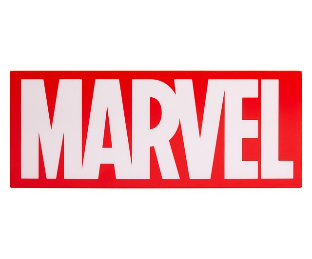

|

|
第三階段漫威電影宇宙：第三階段（英語：Marvel Cinematic Universe: Phase Three）是基於漫威漫畫出版物中的角色製作的超級英雄系列電影，是漫威電影宇宙的第三階段，共包括11部電影。2016年電影《美國隊長3：英雄內戰》是這個階段的第一部電影，該階段完結於2019年電影《蜘蛛人：離家日》。此外，本系列還包括超級英雄集結影片《復仇者聯盟：無限之戰》（2018年）和《復仇者聯盟：終局之戰》（2019年）。凱文·費吉擔當本階段每部電影的監製，艾美·帕斯卡與他共同擔當《蜘蛛人：返校日》和《蜘蛛人：離家日》的監製，史提芬·布魯薩德（Stephen Broussard）與他共同擔當《蟻人與黃蜂女》的監製。本階段11部電影共計收穫票房超過135億美元，在市場取得巨大成功。《復仇者聯盟：終局之戰》成為全球最高票房電影。 |